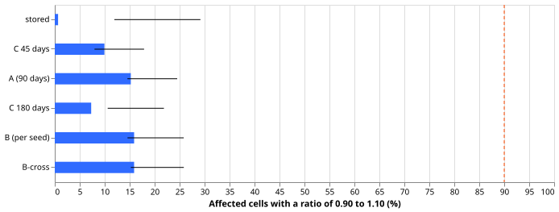
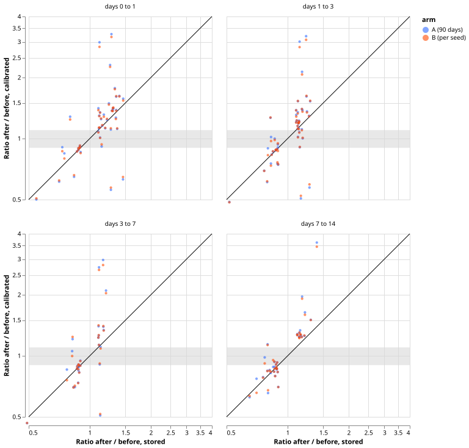

Does a width scale fitted on a fixed lookback remove the steps in band width at the model refits, or does the seed average of the quantiles matter?
A width scale fitted on a fixed lookback does not remove the steps in band width at the model refits, and seed averaging does not drive them. Under the 90-day scale of experiment 683 (arm A), 23 of the 151 affected cells (15.2%) end with a ratio of 0.90 to 1.10 across the refit, against the predicted 90%. The scale moves the ratio farther from 1 in 67% of the affected cells. Fitting the scale on each seed's quantiles and then averaging (arm B) changes the ratios by at most 0.05 in 89.4% of the cells, just under the pre-registered 90%, so we read the seed average as having no material effect on the steps.
The question was whether the steps that experiment 683 measured (Primaries 11 and 13, and six widenings in February) are removed by one scale per series and lead band, or come from the seed average of the quantiles changing at a refit. The September step of Primary 13 lies after the last scored origin month, so this experiment tests Primary 11 and the February widenings only. A lookback of 45, 90, or 180 days leaves 7.3% to 15.2% of cells inside 0.90 to 1.10, far below 90%. We expect the new model's raw band width to differ from the old model's, and the scale for a month is fitted on the old model's forecasts, but this experiment did not test that mechanism and did not fit a scale on any new-model forecasts.
Figures

Share of the 151 affected cells whose after-to-before ratio of band width lies between 0.90 and 1.10, by arm. The dashed line is the predicted 90%. Whiskers are 95% percentile intervals over resampled origin days, with one set of draws per refit boundary.

Calibrated ratio against stored ratio for each affected cell, by lead band, arms A and B. The grey band is 0.90 to 1.10 and the diagonal is no change. Points above the diagonal on the right are steps that the scale has enlarged.
Arms and rows
- Rows: the 16 Primaries, normal-running output, origin months 2025-12 to 2026-06 (refit boundaries 2026-01 to 2026-06; 2025-11 has no earlier forecast to fit on, and origin months from 2026-07 lie in the final-test window and are not loaded). 384 cells (16 series, 6 boundaries, 4 lead bands); 151 are affected (stored ratio above 1.10 or below 1/1.10). Affected cells by boundary: 36, 20, 15, 25, 31, 24 (January to June).
- Cell ratio: median band width (q95 minus q05, after the zero clamp for the MVA Primaries) of the first 7 origin days after the boundary over the median of the last 7 days before it. Ratios of the width and of the half-width agree away from the clamp.
- Arm 0: stored seed-mean file. Arm A: experiment 683's rule, 90 days, fitted on the seed mean. Arm B: the same rule fitted on each seed's quantiles of experiment 667's fits (moved 3 hours to the 12:00 UTC origin, times capacity), applied to the same seed, averaged, then clamped. The seed fits are clamped at zero for the fit only. B-cross: each seed scaled by the other seed's fit. Arm C: arm A at 45 and 180 days.
- Seed check: the mean of the two seed files reproduces the stored file to a maximum absolute difference of 4e-6 in the stored units (3,924,480 rows). Only the normal-running output has per-seed files, so the prevailing output is not tested.
- Code reuse: the fitting rule is copied from
ml-experiments/00683-*/e00683_calibrate.py, which also suppliesz_scores,band_index, andload_truth; scoring helpers come from experiment 668. The experiment fits no forecasting model and ran on CPU only.
Results
- P1 (at least 90% of affected cells within 0.90 to 1.10 under arm A): not supported. 15.2% (23 of 151; interval 14.6% to 24.5%). By lead band: 7 of 44, 8 of 46, 4 of 27, 4 of 34 for days 0 to 1, 1 to 3, 3 to 7, and 7 to 14. Stored: 1 of 151.
- Stored: 1 of 151 is near zero by construction, because affected cells are those whose stored ratio lies outside 0.909 to 1.10. Resampling regresses extreme cells towards 1, which favours the calibrated arms, so the not-supported verdict is not weakened by it.
- P2 (expected to fail): held. The median absolute step of an affected cell is 15% stored and 24% under arm A; arm A moves the ratio farther from 1 than stored in 67% of cells (in either direction).
- P3 (arm B within 0.05 of arm A in at least 90% of cells): narrowly not met, at 89.4% (135 of 151); B-cross is 86.8%. No interval was computed for this share. Arm B passes 24 of 151 cells (15.9%), against 23 for arm A.
- Lookback (arm C): 15 of 151 cells (9.9%) at 45 days and 11 (7.3%) at 180 days, against 23 at 90 days. The steps do not follow the lookback.
- Named steps: at the February refit, days 7 to 14 ratios (stored, arm A, arm B) are 1.21, 1.25, 1.26 for Primary 8; 1.22, 1.64, 1.59 for 15; 1.30, 1.51, 1.50 for 17; 1.39, 3.62, 3.45 for 18; 1.17, 1.24, 1.24 for 24; 1.16, 1.27, 1.27 for 25. Primary 11 at the April refit goes from 1.30 to 1.37 at days 0 to 1 and from 0.76 to 0.79 at days 7 to 14 (arm A). The September refit of Primary 13 lies after July and is not scored.
- Coverage, q05 to q95, pooled by lead band, origin months 2025-12 to 2026-06 (weekly-block 95% intervals about 1.7 points wide each side): stored 82.4% to 84.5%, arm A 87.1%, arm B 88.0% to 88.1%, B-cross 88.0% to 88.2%, 45 days 86.8% to 86.9%, 180 days 86.9% to 87.0%. Arm B's coverage is about 1 point above arm A's, which is inside the width of the intervals.
Checks
- Audit checks (median minus mean forecast, mean-forecast error, audit triggers): not applicable, because the experiment writes no forecast and scores no CRPS. No audit trigger fired.
- Code review: a fresh Sonnet reviewer found five problems: arm B clamped before averaging, arm B fitted on unclamped seed quantiles, independent day draws per cell, the final-test months loaded, and missing duplicate-key and month-pairing guards. All were fixed before the numbers above were produced.
- Bias in the intervals: cells are chosen for an extreme stored ratio, so resampled days regress towards 1 and every percentile interval sits above its point share (the stored arm: 11.9% to 29.2% against 0.7%). Read the intervals as spread, not as bounds.
Caveats and what to try next
- Caveat: each ratio rests on two windows of 7 origin days and may be noisy. The pass share rests on 151 cells that share 6 boundaries.
- Caveat: the per-seed files exist for the normal-running output only, and for two seeds.
- Options for a later experiment, not a plan: fit the scale on the first weeks of forecasts after each refit, or on the new model's own back-test forecasts.